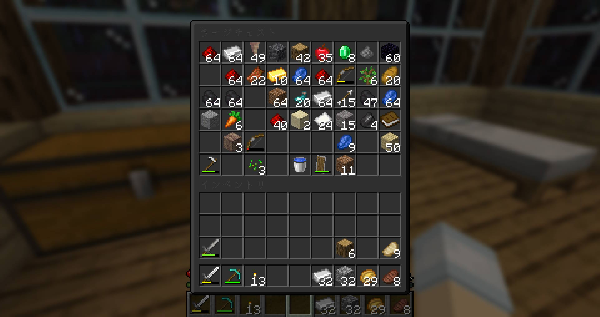
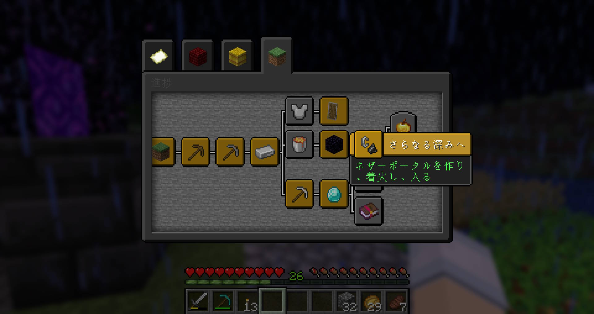

Inventory:
Dark Mode
インベントリーがダークカラーになるリソースパック


利用について
このリソースパックを、改変を加えずに利用する際は、制作者またはこのサイトの掲載は不要です。
動画等のコンテンツ内で、自由に利用することができます。
(でもちゃんと掲載してくれたら僕が喜びます)
このリソースパックに改変を加えた状態で、動画等のコンテンツ内での利用や、再配布を行う場合、
制作者(KabanFriends)またはこのサイトのURLを掲載してください。
ダウンロード